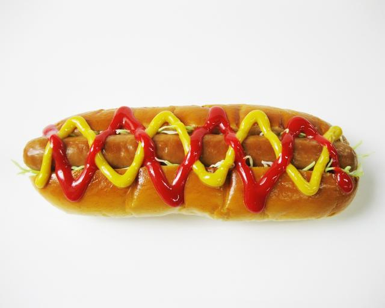

Home
Hot Dog Recipe

Description
A North American classic, this outdoor favorite will get all the people (and pets)mouth's watering.
Not intended for children under 3
Ingredients
- 1 Hot Dog Bun
- 1 All-Beef Hot Dog
- 1 tbsp Ketchup
- 1 tbsp Mustard
- 50g cabbage....apparently
Steps
- On your preferred heat source, cook the all beef hot dog on medium-high heat for 5-10 minutes, until the outside is slightly crispy but not burnt.
- While the hot dog is cooking, open up your hot dog bun and add the cabbage.
- Place hotdog on top of cabbage in hot dog bun.
- gently drizzle ketchup and mustard on top of hot dog. Serve warm.